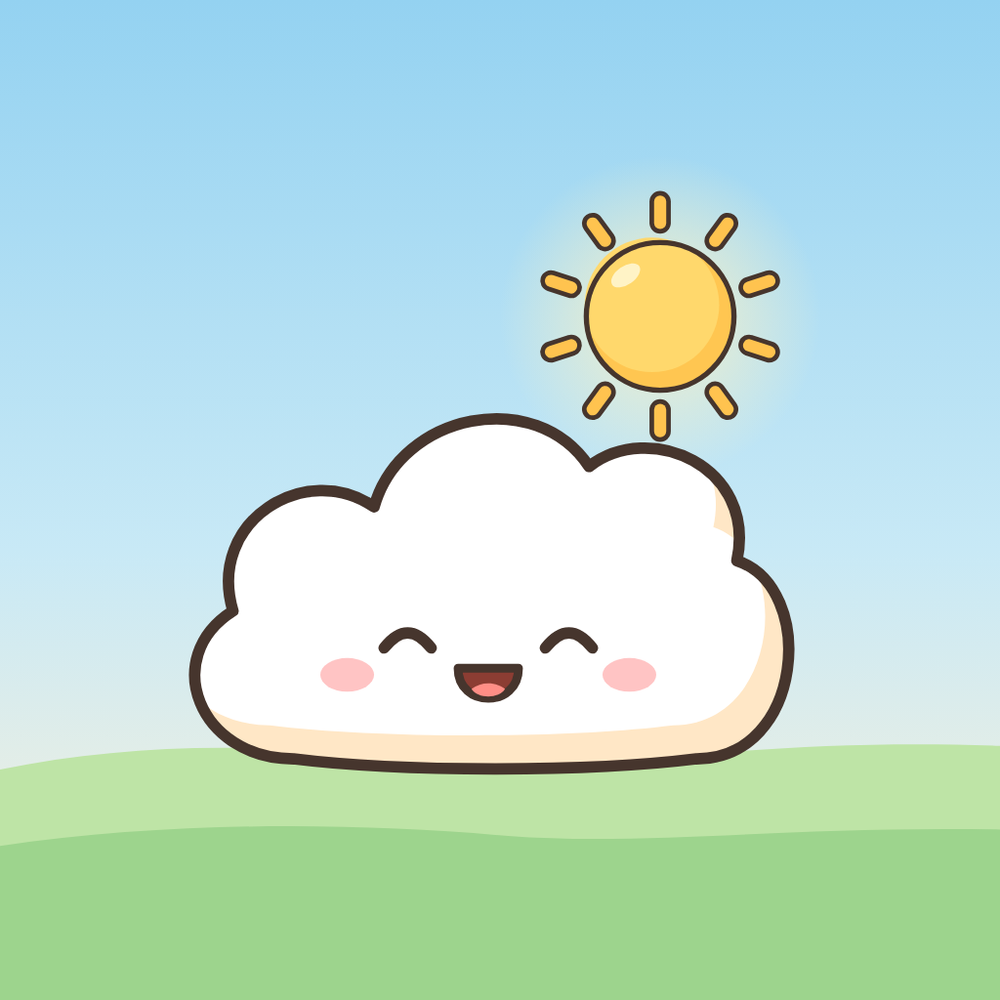

기분날씨지원 · 문의
자주 묻는 질문
기록은 어디에 저장되나요?
이 휴대폰에만 저장돼요. 휴대폰을 바꿀 때는 설정 → 기록 백업하기로 파일을 만들어 두고, 새 휴대폰에서 백업 불러오기로 되살려요. (휴대폰 기본 백업으로 옮겨질 때도 있지만, 파일 백업이 가장 확실해요.)
지난 날을 깜빡했어요
달력에서 그 날짜를 누르면 그날의 날씨와 메모를 남길 수 있어요. 미래 날짜는 남길 수 없어요.
마음 단어는 뭔가요?
날씨를 고른 뒤, 그날 마음에 가까운 말을 3개까지 고를 수 있어요. 안 골라도 괜찮아요. 고른 단어는 달력의 '돌아보기'에 모여요.
몽글이 소품은 어떻게 열리나요?
기록한 날이 1·3·7·10·14·21·30·50일이 될 때마다 하나씩 열려요. 연속이 아니어도 괜찮아요.
마음 일기예보는 언제 오나요?
매주 월요일, 지난주 기록으로 만든 예보 카드가 도착해요. 예보 탭에서 이번 주 카드도 언제든 볼 수 있어요.
알림이 오지 않아요
설정 → 매일 알림을 켜고, 휴대폰 설정에서 기분날씨 알림이 허용돼 있는지 확인해 주세요. 그날 이미 기록했다면 알림을 보내지 않아요.
마음이 많이 힘들 때
기분날씨는 치료를 대신하지 않아요. 힘든 날이 이어진다면 가까운 사람이나 전문가와 이야기해 주세요. 24시간 자살예방상담전화 109, 정신건강위기상담전화 1577-0199에서 도움을 받을 수 있어요.